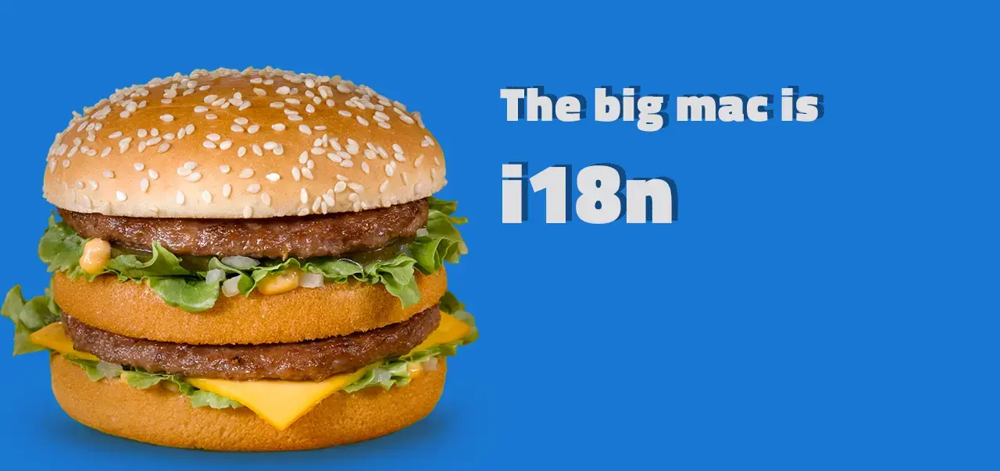
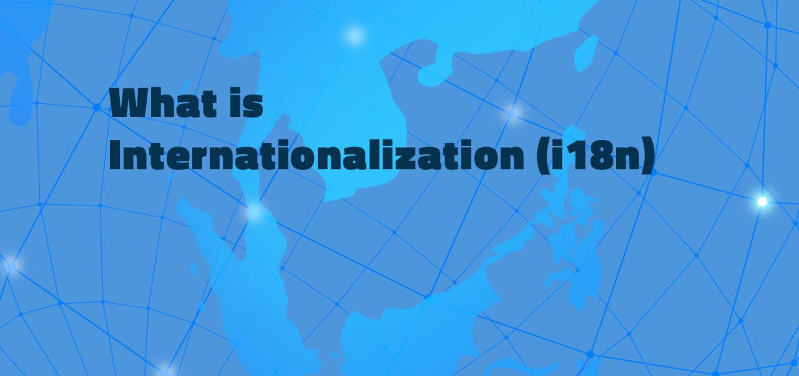
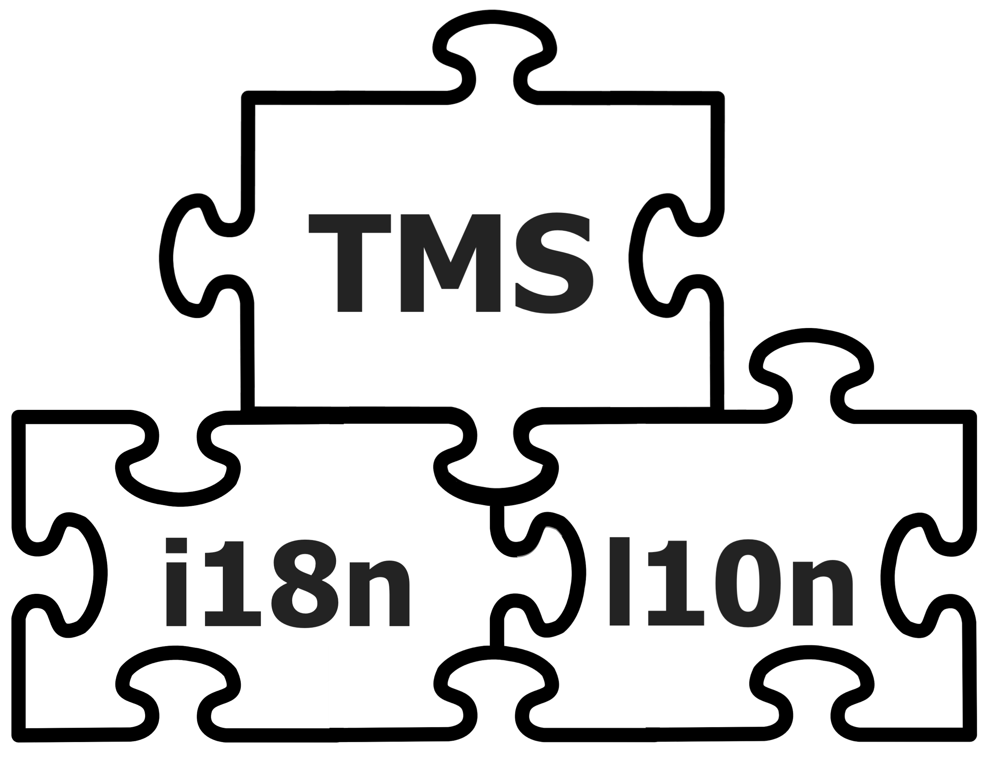
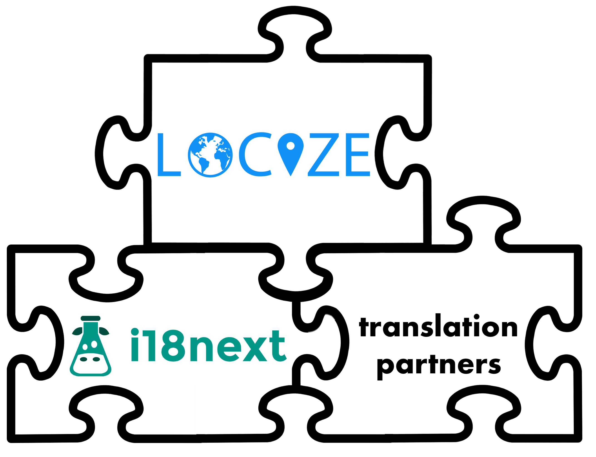
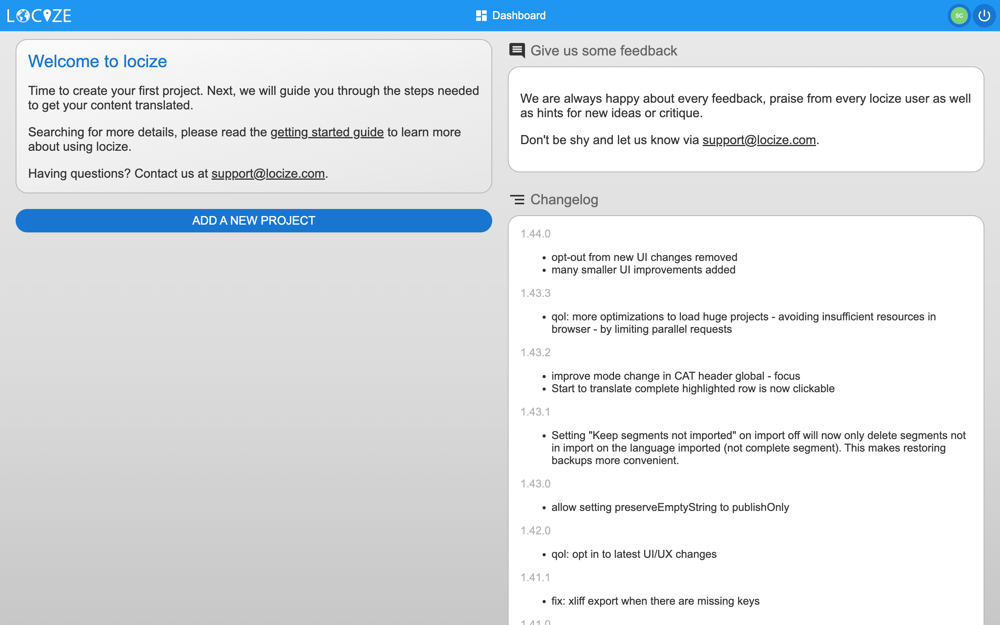

Today you're going to be introduced to a topic every growing business should be aware of.
Find out more about the popular Big Mac from McDonald's and how it relates to this topic.
In fact, this is the same topic that has helped many of our clients in growing even faster.
i18n
The number 18 stands for the letters in 'internationalization' between 'i' and 'n,' making 'i18n.' It helps adapt products for global markets, including different languages and cultural preferences.
It's a way to shorten the word 'internationalization' for quicker and more efficient writing.
There is an easy way to master all your needs for i18n in relation to software.
The best part?
You don't need to make a huge investment in a technology stack.
Let's get started.
Table of contents
- What is internationalization
- How the industry treat it
- The different steps during internationalization
- Misconceptions of i18n
- The benefits of i18n-localization
- How are developers affected from it
- How to measure the success
- Conclusion
- Additional links
What is internationalization
In general, it refers to the process of bringing businesses into international markets. Usually, a company like this is run by a leader who thinks worldwide and knows a lot about different cultures. If you want to take your company global, there's a big need to adapt your app, website, or documents for local markets.
During this business transformation, the managers of those businesses must consider the new culture, region, and language. 'i18n' as word is well known in the software industry.
We're in a digital age that's speeding up. The software business has its way of working, helping with digital tasks as it moves into new areas.
This help is often called localization. The words 'internationalization' and 'making software global' mean the same thing. So, 'i18n' is just a short way to say a business is going global.

It is not always given the attention it deserves
In our opinion, the process of managing software to support local circumstances is in growing companies still a manual procedure. In this stage the company is in, a professional way is appreciated for the clients. Here are some interesting facts about internet surfers in Europe that showing how important localization is:
- Only a fraction of enterprises uses advanced digital technologies
- 56% of individuals in the EU have at least basic digital skills
This demonstrates that only a few businesses are utilizing technology as they should today. According to the article, many more people will develop digital skills over the next decade.
If you are a growing international business, i18n can assist you in meeting the needs of internet users. Similarly, using advanced digital technologies will help you enhance the quality of your products or services.
Data from the US Bureau of Economic Analysis shows that US companies are serving more customers from other countries. Over the last few years, there's been an increase of over 15%
These figures show that every company must be aware of the internationalization of its operations, particularly its software. The software can be viewed as the primary means of achieving digital transformation. This leads us to the next subject on which you should brush up on your internationalization knowledge:
The different steps during internationalization
This can serve as a step-by-step guide:
- Build your team
- Evaluate the right translation management software
- Preparing your software (date, time, strings, languages, etc.)
- Take care of compliance
- Optimize marketing in app store and search engines
- Test your localization
- Learn and amend your solution
During the process, you can use an i18n framework to get your software ready. In our ecosystem we have the i18next-framework which is more than just a collection of basic i18n functionalities (plurals, context, interpolation, format). It offers a comprehensive solution for localizing your product from the web to mobile and desktop.
Bonus Tip
Who better to understand a culture than those who live within it? Make use of local specialists in each of your target markets. As a result, your team will be able to provide users with the most accurate, user-experience possible.
This is definitely a key part of the i18n strategy. Using a translation marketplace can quickly get you a translator, making your i18n much more successful.
Misconceptions of i18n
Myth 1: i18n Is Only Important for Multinational Companies
Some think i18n is just for big global companies, but that's not true. Nowadays, even small businesses can gain from i18n. By offering your app in different languages, you can reach more customers and boost your income. Who wouldn't like that?
Myth 2: i18n Is Just Translation
Many people wrongly believe that i18n is just translating text. But it's much more. It includes changing user interfaces, date and time formats, and even adapting to local customs like currency symbols and measurement units. So, i18n isn't just about using Google Translate. It's about making your product fit for different cultures.
Myth 3: i18n Is Too Expensive and Time-Consuming
Some developers believe that implementing i18n in their application is too expensive and time-consuming. Sure, it may take some extra effort up front, but the benefits far outweigh the costs. By making your application available to users around the world, you can reach new markets and increase your profits. And with translation management system, like locize, implementing i18n has never been easier or more affordable.
Myth 4: i18n Is Only Relevant to Certain Industries
Some think i18n matters only for specific fields like e-commerce or travel, but that's incorrect. Almost every app can use i18n, from social networks to games. Everyone should get to use an app in their language and cultural context. Play the game and see how you can prepare your app for localization!
Myth 5: i18n Is Only Relevant to Non-English Languages
Some people believe that i18n is only relevant to non-English languages, but that's not true. i18n is crucial for English apps too. Not everyone speaks English as their first language, and English-speaking countries have their own cultures and language styles. With i18n, your app can work well for all English speakers, no matter where they are from
The benefits of i18n-localization
By picking the right partner, you can offer complete localization automation that fits seamlessly into your ongoing delivery process.
- Increase your consumer base
- Increase internet users' contentment (user-experience)
- Enter new markets quickly and strategically
- Reduce your time, money, and effort
- All languages' source code is centralized, making future modifications simple
- The internet market's reach is rapidly expanding
- Use global marketing to your advantage
Businesses should study local consumer behaviors to tailor their product offerings and marketing strategies.
Using the Big Mac Index as an example, it gives a basic way to see how prices vary worldwide, because the Big Mac is standardized globally.

, compared to the U.S. ($5.58) and the Euro area ($5.82), highlights the significance of adapting product pricing and strategies through internationalization (i18n) to account for local market conditions and consumer purchasing power.
The fact that a Big Mac costs $7.73 in Switzerland, versus $5.58 in the U.S. and $5.82 in the Euro area, shows how important it is to adjust prices and strategies for different markets through internationalization (i18n). This takes into account the local market situations and how much people can pay.
But it's not just about changing prices. Localization also means changing products, marketing, and the customer experience to fit local cultures and expectations. Companies need to understand these cultural differences and customize their products and services to meet them.
Grow global with locize
We at locize are specialists to make your internationalization a success story.➡️ Check out the features of our localization management platform
How are developers affected from it
This is where localization, or l10n, comes into play. It's a part of making software global, or internationalization (i18n), focusing on adapting software or services for different markets. The developers working on this are key to the success of making your product global.
i18n is how developers get software ready for use in countries outside where the company is based.
They also play a role in how well your content does in search engines like Google. If your website offers content in various languages or for different places, you can improve how it shows up in Google searches.
This guide will help you on that.
What is software-localization
When adapting a web product to a new customer base in a different region, a developer must take care of software localization. Typically, the process necessitates the complete modification of text and multimedia for a software product.
Since JavaScript and its frameworks are among the most popular programming languages today, it's important to explore how JavaScript applications can be adapted for a global audience.
Following three main points with JavaScript are very well for localizing any application or website:
- JavaScript can detect the user’s preferred locale before giving them the option to manually select their own. This increases the user-experience and will result in more trust for your brand.
- There are functions help to handle right to left languages like Arabic or Persian. This ensures to expand also to countries with right-to-left language.
- If you don't want to reinvent the wheel, you can select a library that includes plugins for almost every situation. For example, i18next is an excellent choice for medium and large applications that require a significant amount of internationalization.
Find your way of i18n
This guide of JavaScript localization helps you find the right solution for your software-localization need with JavaScript. In this guide, you'll also find details on managing locales in applications using React, Vue, Angular, and other supported frameworks like Flutter and Rails, among others. 
More information
In this guide we help you to understand i18n and here you can check if your software is ready for localization.
To answer the questions about i18n, you will finally probably use a corresponding i18n framework that meets your needs.
Advice
When it comes to web localization, one of the most popular i18n frameworks is i18next.
The biggest mistake one can do is looking on software localization as it’s only based on instrumenting your code and extract texts into resource files so you can translate them later.
The requirements are clear: enable the application to be translated later but without time to think more about it. It ends with reaching the release day with an application ready to be published in one language.
t9n - translation
When the code is ready to be localized, someone needs to translate the content.
You can have your translation done by freelancers, agencies or in-house employees. You can also start with some machine translation, but a translator should at least proofread the machine translated texts.
Advice
Use one of the integrated services to order the translations from a third party.
Text translations are just one element in the localization process. You may also think of images, documents that differs not only for different languages, but also for different countries or regions.
Next Steps
After having internationalized the code and knowing how the content is translated, how will these 2 parts interact with each other?
What is Translation Management
Translation management is the systematic process and automation that manages translations and other digital assets, eliminating repetitive and laborious manual tasks while enabling progress overview and control, increasing collaboration and delivering greater efficiency.
Is manually merging the translation files the best approach?
Before release, the localization team will request resource files from the developer for translation. Despite knowing changes will occur before and after the release, the developer provides the files.
Weeks later, translated files are returned, but many terms have changed or are new, leading to discrepancies. This situation highlights the need for effective translation management system.
Exporting, importing, and merging files amidst ongoing content changes can be chaotic.
There it is good to choose a TMS that best fits your needs to streamline this process.
TMS with continuous localization
Not every continuous localization offered by the various translation management systems is the same. Check out the main differences here.
New content in your application should instantly be available in your translation management tool, and finished translations should be integrated without developer intervention.
Since software development is continuous, your localization process should match this pace.
This is key
Translation files should be deployable independently from the software, allowing updates and management without new releases.
Maintain multiple translation versions:
- one for the current release and one for the development branch.
This enables translators to manage updates from day one and adapt to changes easily, allowing for translation updates without needing a new software release.
Advice
locize ends translation headaches. No more software delays due to missing translations.
Translators update from day one, seamlessly integrating changes. Continuous localization matches your development pace, with independent deployment and management of translation files.
Maintain multiple versions for releases and development branches. locize ensures your localization process meets business demands effortlessly.
How to measure the success
You might be wondering how to monitor your project's internationalization progress. Questions may arise: How many translations remain incomplete? Are visitors accessing localized content on the website? Is the code meeting quality standards?

The integration of locize brings you the extra level of tracking and support. Accessing crucial project data through the locize dashboard saves you countless hours otherwise spent on localization tasks.
locize help to measure the progress:
- Allows for continuous localization
- Reporting on progress
- Reporting on usage
- Keep track of new translations
- Discover translated, fuzzy, warning, or untranslated keys.
- Obtains your missing keys and sends them directly to the project
- Track user metrics on individual level (e.g. words)
- Review workflow when user changes language data as well as history of it
- Detect issues in the translation-keys
Find out more at the locize documentation for issue detection.
Conclusion
How do you handle internationalization for your application? Let us know by sending an email to support@locize.com or leaving a comment on X or facebook.
The term "i18n" is commonly linked with the software industry. It involves the operational procedures required when a company expands into new markets or countries. i18n involves a full-fledged industry that emerged to assist clients in adapting their software, websites, or video games. If you want to learn more about "what is i18n," the following links may be helpful.
Additional links
➡️ Create a free new user account for advanced i18n-experience with locize
➡️ Check out real examples at website-localization